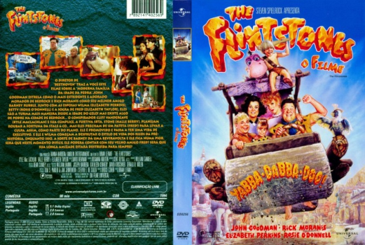

Os Flintstones: O Filme (1994)


Yabba-Dabba-Doo!

Avaliação (TMDb):


5.3/10 (2K votos)
Avaliação (Usuário):
Outro Título:The Flintstones
País:United States, 91 minutos
Idiomas falados:Inglês, Português
Gênero(s):Fantasia, Comédia, Família
Diretor(s):Brian Levant
Codec:MPEG-2 (DVD)
Número: 5188
Sinopse:
Fred e Wilma se deslumbram quando Fred é promovido a vice-presidente da Pedregulho e Cia. Como eles não sabem que a promoção é uma trapaça, o casal de amigos Barney e Betty faz de tudo para alertá-los.
Elenco:
John Goodman, Elizabeth Perkins, Rick Moranis, Rosie O'Donnell, Kyle MacLachlan, Halle Berry, Elizabeth Taylor, Dann Florek, Richard Moll, Irwin Keyes
Tipo de mídia: DVD R/RW,
Legendas: Inglês, Português, Sem Legendas
Alugado: Não
Tela: Anamorphic Widescreen